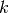
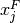
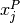
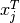
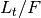

Enrichment¶
Nuclide - and specifically uranium - enrichment is a common materials task. This is the process by which the isotopic distribution is modified based on the masses of the constituent nuclides. On an industrial scale, this is often done using gaseous diffusion or gas centrifuge cascades.
The PyNE enrichment module provides a technology-independent way of solving for the product and tails material streams given an initial feed material and the following parameters:
 (j) - enriched key component: nuclide to enrich in product
stream [‘U-235’].
(j) - enriched key component: nuclide to enrich in product
stream [‘U-235’].-  (k) - de-enriched key component: nuclide to enrich in tails stream [‘U-238’].
- (alpha) - stage separation factor: the proportion that each stage enriches [1.05].
-  (x_feed_j) - target enrichment of jth key component in feed material [0.0072].
-  (x_prod_j) - target enrichment of jth key component in product material [0.05].
-  (x_tail_j) - target enrichment of jth key component in tails material [0.0025].
- mat_feed - feed material stream: material to be enriched, this should only contains isotopes of a single element [natural uranium].
The following cascade attributes must also be given as sane initial guesses:
- (Mstar) - mass separation factor: initial guess for overall mass separation for the cascade [236.5].
 (N) - number of enriching stages: initial guess [30.0].
(N) - number of enriching stages: initial guess [30.0]. (M) - number of stripping stages: initial guess [10.0].
(M) - number of stripping stages: initial guess [10.0].
For two component mixtures, i.e. those with only two nuclides in the feed material, the mass balance and flow rate equations are well defined and the optimal enrichment cascade setup may be solved for trivially. However, for more than two components, the cascade cannot be determined from the target enrichments alone (x_feed_j, x_prod_j, x_tail_j). Because the mass balance equations themselves are under-determined extra constraints must be emplaced. This turns out to be a minimization of the total material flow rate through the cascade per unit of feed [WOOD] [GARZA]. This value, , may be seen as a function of the mass separation below.

Figure 1: The normalized total flow rate as a function of the mass separation factor between the jth and kth key components for a sample uranium cascade. [ipython notebook]
It is easy to see how the flow rate is minimized near the center of this bucket-shape in Figure 1. Finding this minimum point is what the multicomponent() function does. This optimization is the main function of the enrichment module.
Example of Use¶
The fundamental data structure of enrichment is the Cascade. Cascades are containers for attributes which define a technology-agnostic cascade. You may set up a cascade either by passing keyword arguments into the constructor or as attributes on the instance:
import pyne.enrichment as enr
from pyne.material import Material
casc = enr.Cascade(x_prod_j=0.06)
feed = Material({
922320: 1.1 * (10.0**-9),
922340: 0.00021,
922350: 0.0092,
922360: 0.0042,
922380: 0.9863899989,
})
casc.mat_feed = feed
A default uranium enrichment cascade is provided as a quick way to set up a basic Cascade instance, which you may modify later:
orig_casc = enr.default_uranium_cascade()
orig_casc.x_prod_j = 0.06
orig_casc.mat_feed = feed
This may then be fed into the multicomponent() function to produce an optimized version of the original cascade. The product and tails material streams have been computed on the optimized version:
>>> opt_casc = enr.multicomponent(orig_casc, tolerance=1E-11)
>>> print opt_casc.mat_prod
Material:
mass = 0.11652173913
atoms per molecule = -1.0
-------------------------
U232 9.25100048726e-09
U234 0.00160553384204
U235 0.0600000000115
U236 0.0193252508798
U238 0.919069206016
Further information on the enrichment module may be seen in the library reference Enrichment – pyne.enrichment.
| [WOOD] | H. G. Wood, V. D. Borisevich, G. A. Sulaberidze, ‘On a Criterion Efficiency for Multi-Isotope Mixtures Separation,’ Separation Science and Technology, 34:3, 343 - 357, DOI: 10.1081/SS-100100654, URL: http://dx.doi.org/10.1081/SS-100100654. |
| [GARZA] | de la Garza, A., ‘RESOLUTION OF A MULTICOMPONENT CASCADE WITH TWO KEY WEIGHTS AND MULTI-FEEDS AND WITHDRAWALS.,’ Atomic Energy Commission Combined Operations Planning, Oak Ridge, Tenn., Report Number AECOP–330, 1969 Dec 01, DOI 10.2172/4106611, URL: http://dx.doi.org/10.2172/4106611. |